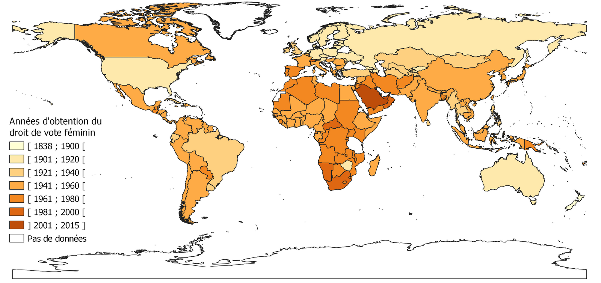
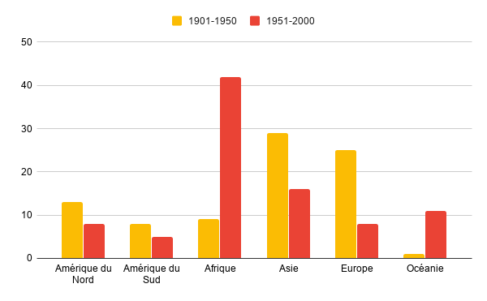
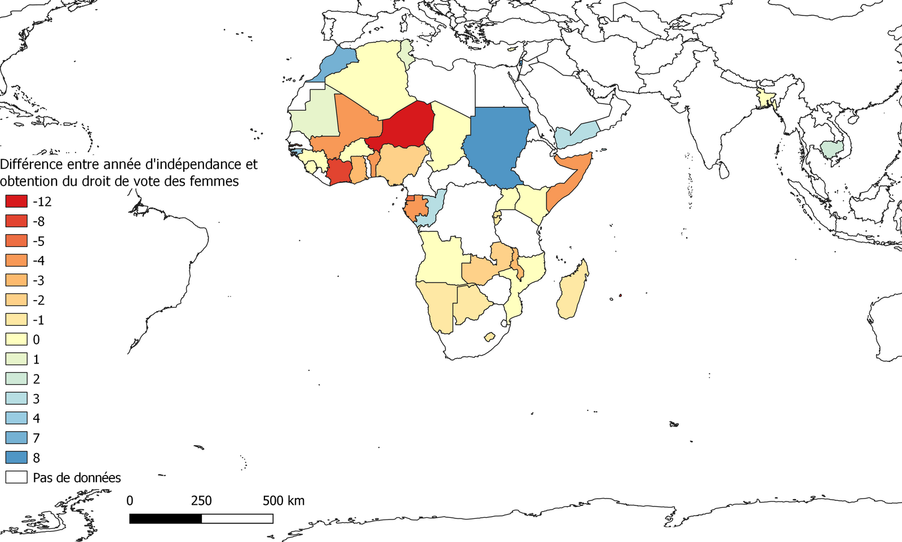
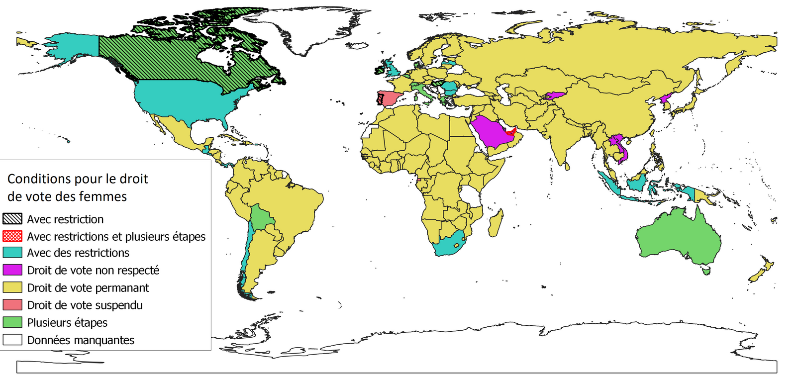

Le droit de vote signifie que les personnes qui obtiennent ce droit peuvent s’exprimer sur les décisions de la société et ces personnes sont donc des citoyens. Les femmes dans l’histoire n’obtiennent pas le droit de vote en même temps que les hommes, elles ne sont donc pas considéré comme citoyenne à l’égal des hommes et donc à ce titre elles ne font donc pas parti de la société !
A partir Vème siècle, les athéniens ont eu le droit de vote cependant seulement les citoyens ont le droit de vote. A cette époque, les citoyens doivent être propriétaire et ne doivent ni être métèques ni esclaves. Donc seulement, 10% de la population athénienne sont des citoyens en 500 avant JC.
Donc il n’y a pas de démocratie car seulement un petit nombre de personne décide, c’est donc un régime oligarchique. C’est seulement à l'époque de Clisthène qu’on parlera d’égalité avec le phénomène d’isonomie qui signifie « l’égalité de tous », cependant on ne peut pas vraiment parler de démocratie car les plus pauvres ne peuvent pas être élu magistrats.
Il faudra attendre l’élection de Périclès en 461 et la réforme d’Ephialte en 462, pour parler vraiment de démocratie. Ephialte fait voter une réforme qui permet à tout le peuple de juger tous les crimes, la justice démocratique alors apparaît. Périclès lui met en place une mistophorie, qui permet aux plus pauvres d’être élu magistrats.
Entre 1492 et 1789, dans les démocraties modernes, le droit de vote se définit comme un droit civique fondamental. A l’époque contemporaine, le droit de vote permet soit d’élir des gouvernants dans le but de les représenter, soit pour donner une réponse à une question posée par le gouvernement. Au XIXème, le vote devient synonyme de démocratie. La société est donc une société patriarcale c’est-à-dire que c’est l’homme qui détient l’autorité. Dans ces sociétés les femmes sont sous le pouvoir de l’homme, elles sont sous les ordres de l’homme, du père de famille.
Dans un premier temps, nous avons supposé que dans les pays du Nord, les hommes et les femmes ont obtenu le droit de vote en même temps.
Cependant il faut attendre le 19ème pour certaines femmes dans le monde obtiennent le droit de vote alors que les hommes ont le droit de vote dans l’Antiquité avec la démocratie athénienne. Par exemple, en France les hommes ont pu voter à 1848 et les femmes en 1944. Pour un pays développé, il a fallu attendre 96 années pour que les françaises aient le droit de vote. Pour les Etats-Unis, les hommes ont obtenu le droit de vote en 1869 et les femmes en 1920.
Ensuite, nous pensions que les femmes des pays du Nord avaient obtenu le droit de vote avant les femmes des pays du Sud mais cette hypothèse est fausse.
Carte n°1 : Évolution du droit de vote des femmes
 Au 19ème, la Nouvelle-Zélande est le premier pays à obtenir le droit de vote pour les femmes en 1893. Elles obtiennent le droit de voter aux élections législatives cependant elles ne seront éligibles qu’en 1919. La Nouvelle Zélande est considéré comme un pays du Nord. Il y a aussi d’autres petites îles qui ont obtenu le droit de vote pour les femmes comme par exemple, l'Île Pitcairn qui est un territoire britannique d’outre-mer dans l’océan Pacifique. Cette île obtient le droit de vote des femmes en 1838 après avoir été annexé à la Grande Bretagne. L’île de Man ainsi que l’île de Cook obtiennent le droit de vote des femmes au 19ème siècle. Ainsi, le droit de vote des femmes au 19ème n’est pas vraiment à l’ordre du jour.
Les pays développés sont néanmoins en retard sur certain points tel que le droit de vote pour les femmes. Il faudra attendre le 20ème siècle pour que le droit de vote des femmes se répande dans les autres pays.
Au cours du 20ème siècle, il y a deux tendances. Dans la première moitié du siècle (de 1901 à 1950), on observe que le droit de vote des femmes se tourne plus vers les pays du Nord comme par exemple les pays tels que le Danemark en 1915, les Pays-Bas en 1917. On compte 25 pays européens qui adopte le droit de vote pour les femmes de 1901 à 1950 contre 9 pays africains sur la même période. (Sénégal en 1945).
Sur la deuxième moitié du siècle, il y a une inversion de la tendance. Les pays développés adoptent beaucoup moins le droit de vote que les pays sous développés car une majorité l’a adopté entre 1901 et 1950.
Graphique n°1 : Le droit de vote adoptés pour les femmes par continent
Deux pays proche de la France, l’Espagne et le Portugal ont adoptés très tard le droit de vote pour les femmes par rapport à la France. En 1976 pour le Portugal et un an plus tard pour l’Espagne, alors que se sont des pays du Nord et normalement développés. Pour l’Espagne, les femmes obtiennent le droit de voter en 1931 mais ne votent pas cette année là, elles voteront en 1933 puis elles perdront ce droit durant l’époque franquiste (1936-1975). Elles auront le droit de voter après la fin de la dictature sous Franco.
Au 21ème siècle, le Bahreïn obtient le droit de vote pour les femmes en 2002, le Koweït en 2005, les Émirats arabes unis en 2006 et enfin l’Arabie Saoudite en 2015.
En Arabie Saoudite le droit de vote pour les femmes et les hommes s’appliquent aux niveaux locales car le parlement n’est pas élu mais désigné par le roi. En 2011, le roi accorde le droit de vote aux femmes et aussi le droit de se présenter aux élections si elles sont titulaire d’un diplôme d’enseignement supérieur. Cela montre que toutes les femmes ne peuvent pas être élues. De plus ce droit est très difficile a mettre en place car elles doivent avoir une facture d'électricité à leur nom, ce que la plupart ne possède pas. Aux élections en 2015,132 000 sont inscrites sur 4.5 millions d'électrices potentielles. Les femmes ne peuvent pas être mélangés aux hommes dans les salles de vote mais aussi lors des campagnes électorales. C’est le dernier pays qui accorde le droit de vote aux femmes. Cependant ces citoyens sont privés du droit de vote au niveau national car c’est une monarchie absolue.
L’histoire de chaque pays joue un rôle majeur sur les droits et les devoirs des citoyens. Elle joue un rôle déterminant dans l’acquisition du droit de vote des citoyens. Comme par exemple avec le cas de l’Espagne, la dictature a joué un rôle important sur le droit de vote des femmes mais aussi des hommes. Nous avons voulu étudier si l’indépendance des pays colonisés avait aidé ou non les femmes à obtenir le droit de vote. Nous avons donc réalisés cette carte ci-dessous.
Carte n°2 : Le droit de vote des femmes dans les pays décolonisés après 1950 en Afrique
 Sur les 42 pays représentés sur cette carte, 20 pays ont obtenus le droit de vote pour les femmes pendant qu’ils étaient des pays colonisés. L’année de l'indépendance joue un majeur car 12 de ces pays ont obtenus le droit des votes pour les femmes la même année. On peut supposer que les femmes ont profiter de l’indépendance pour demander le droit de vote car ces pays est en pleine reconstruction suite à une domination étrangère. Les restes des pays africains ici représentés sur cette carte (9 pays) ont obtenus le droit de vote des femmes très rapidement après l'indépendance, maximun 8 ans après.
Les premiers combats des femmes pour obtenir le droit de vote a commencé en 1832 en Grande-Bretagne. Elles ont crées la première pétition féministe au Parlement. Le but est de faire obtenir le droit de vote aux femmes.
En 1897, Millicent Fawcett fonde la National Union of Women’s Suffrage Societies pour obtenir le droit de vote aux femmes avec des moyens pacifistes. Ce mouvement se nomme aussi Suffragists. Elle essayera de convaincre les hommes. Elle donna comme exemple que les femmes obéissent aux lois donc elles pourraient participer à leur création.
En 1903, Emmeline Pankhurst fonde la Women’s Social and Political Union suite auquel un groupe de femmes britanniques se crée, on le nomme «suffragette». Il est très différent du mouvement des Suffragists, celui-ci est représenté comme une bataille violente pour obtenir l’égalité entre hommes et femmes donc pas seulement le droit de vote des femmes. Ce terme « suffragette » s’est généralisé pour l'ensemble des militantes pour le droit de vote des femmes aussi bien à Londres qu’en Allemagne et même en France.
En 1918, les femmes britanniques obtiennent le droit de vote à 30 ans alors que les hommes peuvent voter à partir 21 ans donc il n’y a pas encore d’égalités entre les citoyens. Il faut attendre dix ans pour que l’égalité s’établisse entre les hommes et les femmes. (1928)
Le mouvement des suffragettes s’est généralisé dans d’autres pays. Par exemple en France. La société Le droit des femmes est créé en 1876 par Hubertine Auclert qui devient en 1883 Le suffrage des femmes. Cette société est créée dans le but de soutenir le droit de vote pour les femmes.
En février 1914, plus de 40% des députés refusent de donner le droit de vote aux femmes. Face à ça, en avril elles décident d’organiser un plébiscite avec lequel elles réunissent 505.972 « oui » pour le droit de vote des femmes.
Le 5 juillet 1914 a lieu une manifestation qui sera la première “Journée des femmes”, cette journée rassemble environ 6.000 femmes, ces femmes souhaitent obtenir le droit de vote et l’égalité politique, c’est la première grande manifestation de rue.
Grâce à ces mouvements, la première journée internationale des femmes a lieu le 19 mars 1911. Le but de cette journée est de revendiquer le droit de vote des femmes mais aussi le droit au travail et la fin des discriminations au travail. Cette journée regroupe plus d’un million de personne. En Allemagne, cette journée permet de demander le droit de vote pour les femmes, elles obtiennent quelques années plus tard, en 1918.
Nous avons remarqué avec nos recherches sur les «mouvement féministes»font ressortir que les mouvements féministes pour le droit de vote des femmes ne sont pas présents dans les pays du Sud.
Cela s’explique pour des raisons très simple car entre 1950 et 1960, en Afrique, les femmes sont déjà considérées comme des citoyennes. Elles n'ont pas besoin de se réunir pour défendre leur droits, elles obtiennent le droit de vote après l’indépendance de leur pays.
Il existe un cas particulier, les saoudiennes ont obtenu le droit de vote très tard, en 2011. Un mouvement socialiste, communiste est mis en place pour mettre en avant les femmes dans un pays qui ne donne pas beaucoup de droit aux femmes.
On peut donc conclure qu’il existe des mouvements féministes dans les pays de Nord comme les Suffragettes, les pays développés ne font pas du droit de vote des femmes un de leur principal combat contrairement au pays du Sud où le droit de vote des femmes et un droit qui accordé aux femmes suites à l’indépendance des pays sans que cela ne soit remis en question.
Contrairement aux pays du Sud, ce droit de vote des femmes est comme acquis dans la société après l’indépendance de leur pays. On peut donc remarquer une forte différence entre les pays du Nord et les pays du Sud.
Cependant, il faut faire attention entre ce qui est dit dans les lois et ce qui est fait en réalité. Par exemple, en Arabie Saoudite, les femmes sont les dernières au monde à obtenir le droit de vote. Ce droit de vote annonçait le début de l’émancipation des femmes dans ce pays. Mais les femmes sont considérées comme mineures donc elles doivent demander l’autorisation à leur maris pour voter. Mais ce cas « extrême » n’est pas le seul, il existe dans plusieurs pays des « conditions » pour le droit de vote des femmes.
Dans cette partie, nous allons voir que dans certains cas les femmes n’ont pas obtenu le droit de vote directement, il y a eu des contraintes pour avoir ce droit si précieux. Pour montrer cela, nous avons réalisé la carte ci-dessous.
En plus du cas caricatural de l’Arabie saoudite qui offre un semblant de citoyenneté extrême, d’autres pays offre des droits “nuancés” pour lequel le droit de vote est soumis à des « conditions » !
Nous pouvons distinguer quatre conditions pour l’accès au droit de vote de certaines femmes dans le monde (cf carte n°3). Néanmoins on observe que lorsque le droit de vote a été acqui, il a été acqui définitivement et non remis en question dans la majorité des pays du monde avec certaines exceptions et particularités.
Carte n°3 : Le droit de vote des femmes obtenu sous condition(s) entre 1838 et 2015
Par ailleurs, on peut distinguer une première catégorie celle où les femmes ont obtenues le droit de vote mais avec des restrictions. Ces restrictions varient d’un État à l’autre mais on retrouve généralement les mêmes conditions. Il faut que les femmes sache lire et écrire donc qu’elles soient alphabétisées c’est le cas au Chili, au Guatemala, au Liban, au Panama, au Salvador et d’autres pays. Dans certains pays les femmes doivent être âgées de plus de 25 ans c’est le cas au Chili et de plus de 30 ans au Royaume-Uni ainsi qu’à Trinité et Tobago (ancienne colonie britannique) mais également en Hongrie et en Irlande. En Indonésie et en Afrique du Sud on retrouve des restrictions en fonction de son ethnies en effet, en 1937 en Indonésie le droit de vote a été accordé aux européennes mais c’est seulement en 1945 qu’il a été élargi à toute la population. De même en Afrique du Sud, à partir de 1930 les européennes et les asiatiques ont obtenues le droit de vote et c’est 64 ans plus tard, en 1994, que toutes les sud africaines ont eu le droit de vote. Une autre restriction aux États-Unis et au Royaume-Uni était qu’il fallait posséder des biens pour avoir le droit de vote.
Une seconde contrainte, c’est que les femmes n’ont pas obtenues le droit de vote en une seule fois, il y a eu plusieurs étapes avant cela. Dans certains États tels que la Belgique, le Canada, le Danemark, la Grèce, l’Italie et la Suisse, les femmes ont obtenues le droit de vote pour les élections locales bien avant d’avoir le droit de vote pour toutes les élections confondues. Si l’on prend le cas de la Belgique les femmes ont obtenues le droit de vote communal en 1919 mais c’est seulement en 1948 soit presque 30 ans plus tard qu’elles ont eu le droit de vote pour les conseils provinciaux et pour le parlement national. Maintenant si l’on prend le cas du Canada, les premières femmes veuves de guerre mais également celles servant en outre-mer ont eu le droit de vote à partir de 1917 pour aider à remporter un mandat de conscription pendant la première guerre mondiale. (Cette période se nomme “
Conscription
crisis of 1917”). C’est également durant cette même période que petit à petit les provinces ont commencé à donner le droit de vote aux femmes.
Maintenant, nous allons voir que certains pays ont suspendu le droit de vote des femmes pendant un moment. Pour commencer nous allons voir le droit de vote des femmes au Koweï
t. Dans ce pays les femmes avaient le droit de vote en 1999 mais il leur a été retiré puis accordé de nouveau en 2005. En effet, en 1999 l’émir cheikh Jaber Al-Ahmad Al-Sabah avait promulgué un décret qui accordait le droit de vote et l’éligibilité des femmes, ce décret avait été approuvé par le gouvernement mais malheureusement il fut rejeté par le parlement s
ous la pression importante des islamistes. Nous allons prendre un second exemple, l’Espagne. En 1931 le droit de vote des femmes est inscrit dans la constitution mais l’espagnole ne pourront utiliser ce droit qu’en 1977, soit 1 an et demi après la mort du dictateur Franco. En effet, pendant le mandat de Franco aucune élection n’a été organisée.
Pour finir, nous allons faire un point sur les pays où le droit de vote des femmes n’est pas respecté mais à noter que que dans ce cas là c’est également le droit de vote des hommes qui n’est pas respecté, car la plupart de ces pays sont des dictatures. En Corée du Nord, au Laos et ainsi qu’au Vietnam il y a un parti unique ainsi les hommes comme les femmes n’ont pas de réelle droit de vote. De même en Palestine et au Qatar il n’y a eu plusieurs élections reportées à plusieurs reprises.
created with
Nicepage .